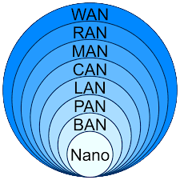
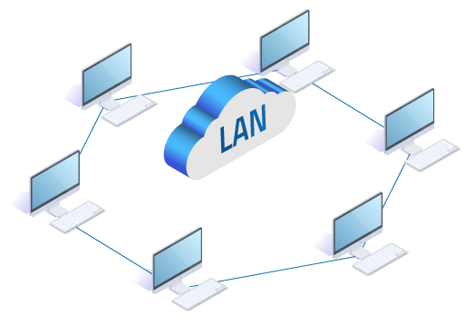
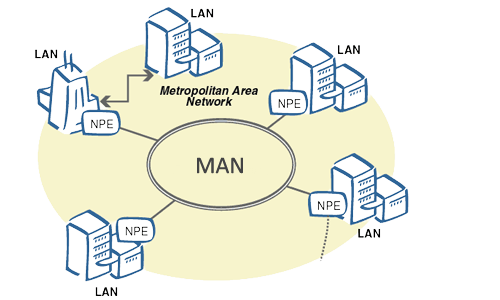

¿Qué es una red informática? |
|
Una red informática consiste en varios dispositivos electrónicos conectados entre sí
para intercambiar y compartir información y recursos.
Internet es un ejemplo de red informática, donde millones de
dispositivos estan interconectados entre sí para comunicarse y compartir recursos.
Servidores: los servidores son los que procesan el flujo de los datos y centralizan el control de la red.
Clientes: se refiere a los computadores que no son servidores, pero que forman parte de la red permitiendo a los usuarios el acceso a esta.
Medios de transmisión: se trata del cableado que permite la transmisión de la información
Elementos de hardware: son las piezas que permiten el establecimiento físico de la red.
Elementos de software: son los programas requeridos para administrar todo el sistema operativo.
|
 |
Dependiendo de su tamaño, podemos clasificar los distintos tipos de redes en: WAN, MAN, LAN o PAN |
|
Red LAN |
|
Una red local o LAN es un conjunto de ordenadores conectados entre sí con la finalidad de compartir recursos e información.
Todos los ordenadores y dispositivos (impresoras, hub, router…) de una red están conectados físicamente mediante un
cableado, y la conexión de este cable a cada ordenador se realiza a través de la tarjeta de red. Además de esta
tarjeta, es necesario que todos los ordenadores dispongan del software adecuado, denominado software de red. En una
intranet, cada ordenador se identifica con una dirección IP.
|
 |
Red MAN |
|
Una red de área metropolitana (MAN) es una red informática que conecta los ordenadores de un área metropolitana, que puede ser una gran ciudad, varias ciudades y pueblos, o cualquier zona grande con varios edificios |
 |
Red WAN |
|
Una red WAN, o red de área amplia (Wide Area Network), es un tipo de red que abarca un área geográfica extensa, como un país o incluso a nivel global. A diferencia de las redes locales (LAN) que se limitan a un área geográfica pequeña, las redes WAN conectan dispositivos a través de distancias más grandes. Las redes WAN son comúnmente utilizadas por organizaciones y empresas que tienen sucursales en diferentes ubicaciones geográficas. Estas redes permiten la comunicación eficiente entre diferentes sedes, facilitando el intercambio de datos y recursos. Para implementar una WAN, se utilizan diferentes tecnologías y medios de transmisión, como conexiones de fibra óptica, enlaces satelitales, conexiones de línea dedicada, o incluso conexiones a través de servicios de Internet. El objetivo es proporcionar conectividad confiable y eficiente entre ubicaciones distantes. |
|